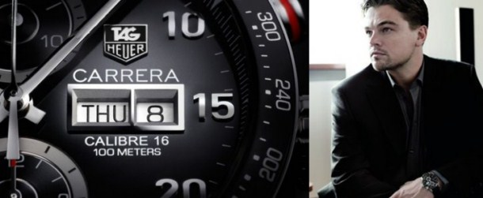

contenido
qqqqqqqqqq
EN VIVO

qqqqqqqqqq
-
NOTICIA PRINCIPALUna breve historia de Git Como muchas de las grandes cosas en esta vida, Git comenzó con un poco de destrucción creativa y encendida polémica. El núcleo de Linux es un proyecto de software de código abierto con un alcance bastante grande. Durante la mayor parte del mantenimiento del núcleo de Linux (1991-2002), los cambios en el software se pasaron en forma de parches y archivos. En 2002, el proyecto del núcleo de Linux empezó a usar un DVCS propietario llamado BitKeeper.
Publicidad
EN VIVO